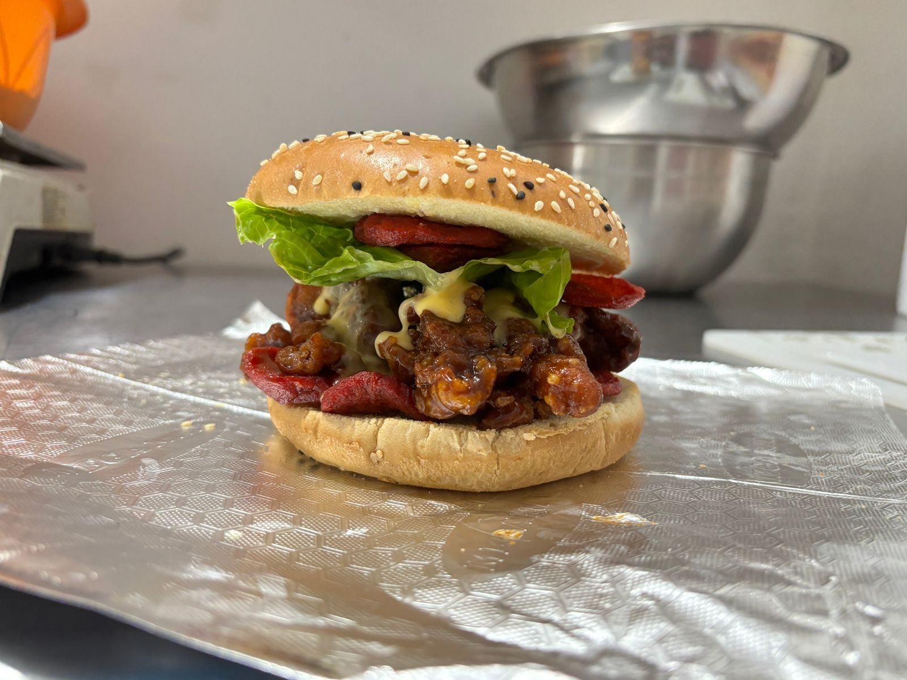

Una hamburguesa puede ser simplemente comida rápida, o puede ser una experiencia inolvidable. En Mr. Papas decidimos tomar el clásico concepto de la "Burger" americana y elevarlo usando uno de los cortes de carne favoritos de todo México: la arrachera.
¿Por qué Arrachera?
El pan suave, los aderezos correctos y los vegetales frescos son esenciales, pero el corazón de cualquier hamburguesa es la carne. La arrachera destaca por su gran marmoleo (esa grasita infiltrada) y fibra suelta, lo que significa dos cosas: es extremadamente jugosa y absorbe el sabor de la parrilla como ninguna otra.
Cuando cocinamos nuestra carne a la temperatura exacta, logramos sellar los jugos por dentro mientras se forma una costra deliciosa por fuera. Al morderla, la textura es suave pero con el carácter fuerte y ahumado de un buen corte de res.
El armado perfecto
Pero la carne no trabaja sola. Todo buen platillo requiere equilibrio. Contrastamos el fuerte sabor de la arrachera con ingredientes frescos y salsas que complementan, inspiradas en los icónicos locales de diners estadounidenses donde las hamburguesas nacieron hace más de un siglo.
Acompañada de una porción abundante de nuestras legendarias papas, cada vez que pruebas una de nuestras hamburguesas estás recibiendo una mezcla de la robustez mexicana con el diseño de comida reconfortante que conquistó el mundo entero.